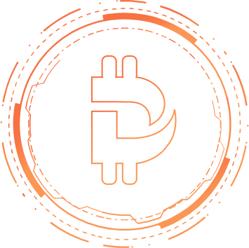
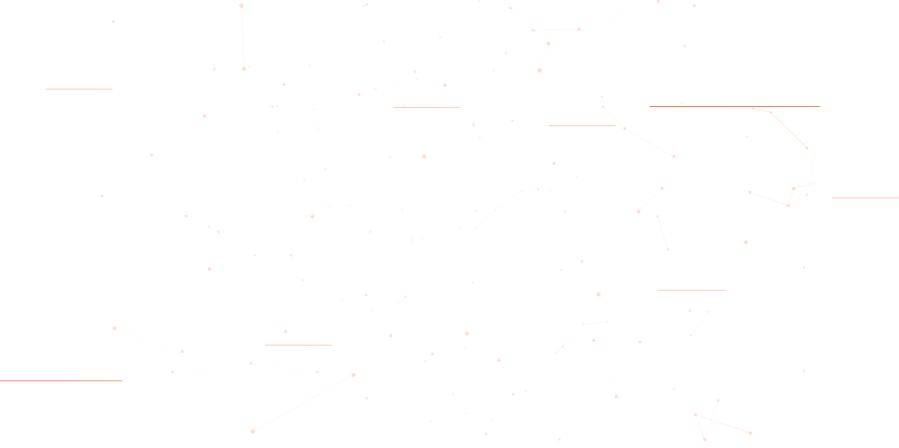
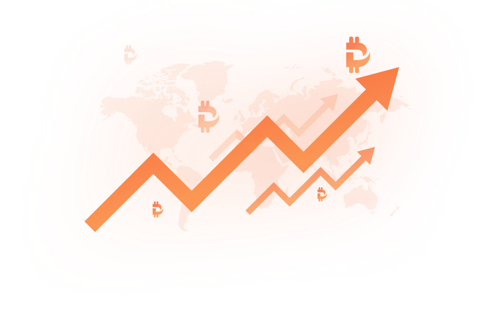
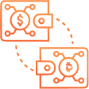

Techical Architecture
Developed by our ambitious team of poker lovers, DaoPoker is a revolutionary platform that uses blockchain technology to address key issues in the online poker industry. Quick and secure transactions are made possible with BTC, ETH and CHP tokens. CHP is the currency of the DaoPoker economy and is used for all products such as poker and sports betting. It will continue to support future developments delivered to our community.

1
Data Analytics
is a combination of analytic tools designed for data warehouses.
It provides a query engine and RESTful API for third-party applications
and external analytics tools.
2
Data Oracle
is an advanced decentralized data feeding protocol powered
by Polkadot/Substrate offering multiple, real-time data sources with
complementarity to and synergy with off-chain workers.
3
Data Marketplace
is an open platform for data exchange and pricing. Dapps built
on Polkadot can easily and efficiently collect both off-chain
and on-chain data only paying a very competitive fee.
4
Token $KYL
is the native token of Kylin Network which will play
the role of governance and other utilities.
$KYL is necessary to secure and power the decentralized data network.
Data Oracle
Data Consumer

Data consumers may represent
smart contracts, APIs, blockchains,
protocols, applications
or any data repository.
Data Warehouse

Data Warehouse in Kylin Protocol
is a decentralised on-chain
repository of integrated data
from one or more disparate data sources
such as Oracle Nodes and the
Arbitration Nodes.
Oracle Node (Miner)

Oracle Node handles all the data
requests such as social data and
market data from
separate off-chain data sources,
and signing the transactions of
the Kylin parachain.
Arbitration Node (Arbitrator)

Arbitration Node guarantees
the securityand accuracy of
external data by verifying the data
integrity and the validity that
Oracle Node provided.
Blockchain Node (Validator)

Blockchain Node (Validator)
The bottom layer of Kylin Oracle is mainly
built on a specialized blockchain
network established by Substrate.
Data Consumer
Data consumers may represent
smart contracts, APIs, blockchains,
protocols, applications
or any data repository.
Data Warehouse
Data Warehouse in Kylin Protocol
is a decentralised on-chain
repository of integrated data
from one or more disparate data sources
such as Oracle Nodes and the
Arbitration Nodes.
Oracle Node (Miner)
Oracle Node handles all the data
requests such as social data and
market data from
separate off-chain data sources,
and signing the transactions of
the Kylin parachain.
Arbitration Node (Arbitrator)
Arbitration Node guarantees
the securityand accuracy of
external data by verifying the data
integrity and the validity that
Oracle Node provided.
Blockchain Node (Validator)
Blockchain Node (Validator)
The bottom layer of Kylin Oracle is mainly
built on a specialized blockchain
network established by Substrate.
Donda Oracle is an advanced decentralized data feeding protocol powered by
Polkadot/Substrate offering multiple, real-time data sources with the complementarity
and synergy to off-chain workers.

Token
Econimics
Econimics
The Kylin Network Mainnet token KYL is necessary to secure
and
power the decentralized data network.
The use-cases and utility of KYL include but not limited to:

Stake to be a Miner
or Arbitrator
All miners are required to stake KYL with
a higher stake equating in a high probability of
being selected to fulfill data requests.
Intermediary of
Exchange
KYL tokens will be used to pay as a transaction,
query fee, and also for data access
behind paywall (private APIs).

On-chain
Governance
KYL Token holders are able to vote for the
protocol upgrades and parameter
changes on Kylin Network.
Application Scenarios
Decentralized Insurance
Automatic Payment
Through the Kylin Network to obtain timely and
reliable events outside the insured chain,
blockchain-based decentralized insurance
can realize automatic payment of insurance
such as flight delay insurance.
Stable Coins and
Crypto Derivatives
Stablecoins and encrypted derivatives need to
frequently
obtain off-chain real-time price data.
Kylin Network can obtain reliable data in
multiple scenarios in real time and efficiently.
Crypto Asset Lending
Platform
Kylin Network can provide real-time and reliable
currency prices and borrower’s social
media information, providing strong support
for the dynamic determination
of loan interest rates.
Cross-chain Decentralized
Exchange
The lightweight Kylin Network interface that
can be deployed on multiple chains
provides the possibility for decentralized
exchanges to realize cross-chain
atomic transactions.
Decentralized Casinos
and Games
On-chain decentralized casinos and games
often require safe and reliable random injection.
Kylin Network random number engine provides
unpredictable and verifiable random number
generation
Blockchain Computing
Market
Commercial computing such as machine learning
training models and 3D rendering needs to
complete a variety of complex computing tasks.
The off-chain computing market provides
verifiable and unlimited off-chain computing capabilities.
DAO
Kylin DAO is aiming to provide tools to facilitate technology development, voting and governance.
KYL Stakeholders will assume a central role in suggesting and determining the priorities
of Kylin Network
through the Governance Committee, whilst the Board will act as guarantor that the Kylin
Network principles
of privacy with accountability and the Public Deed of the Kylin Network Project are
adhered to.
Strategic Investors

Data Ecosystem
Media